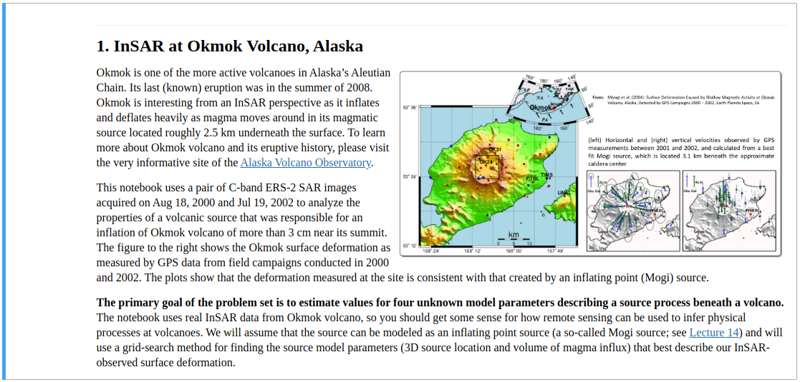
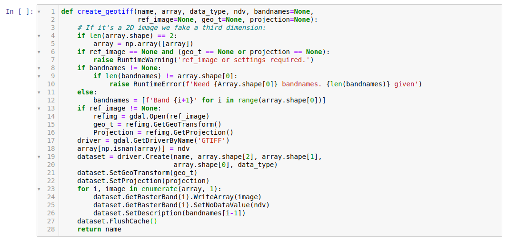
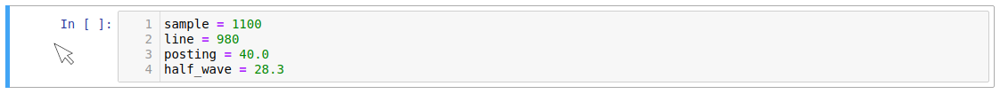
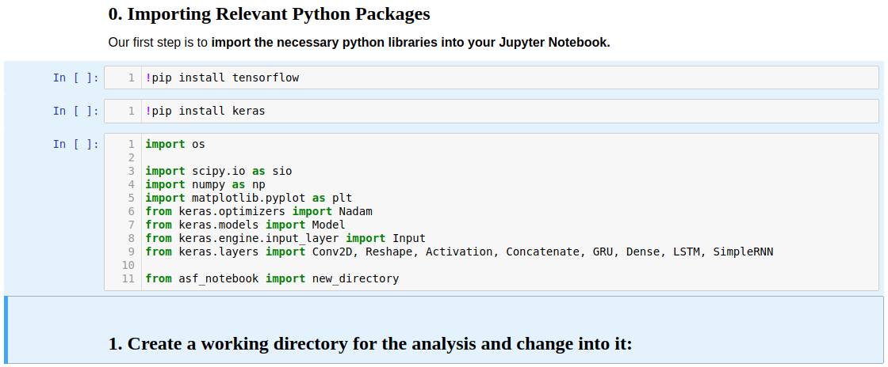
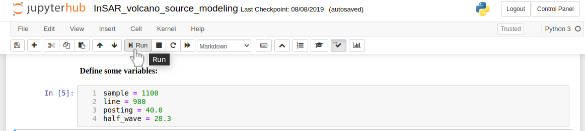

How to Run a Jupyter Notebook
A Light Introduction to Jupyter Notebook
Jupyter Notebook is a web application that allows users to display:
- Interactive and runnable code cells, which is typically written in Python
- Markdown cells containing explanatory text, formulas, hyperlinks, tables, pseudocode, images, etc.
Jupyter Notebook provides an ideal format for teaching/learning coding concepts, prototyping algorithms, and collaborating on Python projects.
While Jupyter Notebook has 4 cell types, we use the following two for the OpenSARlab:
- Markdown cells
- Code cells
Markdown Cells
Markdown cells contain documentation in Markdown, HTML, and/or LaTeX. They are often used to display text, images, hyperlinks, formulas, tables, pseudocode, plots, figures, etc.
- To enter edit mode in a markdown cell, double click it.

A markdown cell in edit mode
If you:
- Want to proceed through the notebook past the markdown cell.
- Run a markdown cell's code to display its formatted contents.
Click the play button at the top of the notebook or hit shift + enter.

A run markdown cell
Code Cells
Code cells contain editable and runnable Python code. You can run them in any order for any number of times.
-
The ability to run/rerun code cells in arbitrary order can be helpful, but it can also cause problems.
-
e.g. Recycled variables may end up with unexpected values if cells are run in non-sequential order.

A code cell
Selecting Cells
Select a Single Cell in Non-Edit Mode
- Click to the left of a cell

A selected cell in non-edit mode is surrounded by a box with a blue left edge
Select Multiple Cells in Non-Edit Mode
- Select a cell in non-edit mode
- Select additional cells with:
Shift + JorShift + Down-Arrowto select additional cells belowShift + KorShift + Up-Arrowto select additional cells above
- Perform batch operations on selected cells

Multiple selected cells are surrounded by a blue highlighted box
Select a Code Cell in Edit Mode
- Click inside a cell
A selected cell in non-edit mode is surrounded by a box with a green left edge
Select a Markdown Cell in Edit Mode
- Double click inside a cell
A markdown cell in edit mode is surrounded by a box with a green left edge
Running Cells

Since code cells may be run in any order, they are numbered in the order they ran.
Run a Single Code or Markdown Cell
With the Run Button
- Select a cell in edit or non-edit mode
- Click the Run button

Click the Run button to run a selected cell
With Hotkeys
- Select a cell in edit or non-edit mode
Ctrl + Enterruns a cellShift + Enterruns a cell and selects the cell belowAlt + Enterruns a cell and inserts an empty cell below
Run a Cell and every Cell Above or Below It
- Select a cell in edit or non-edit mode
- Select
Run All Abovefrom the "Cell" menu - Select
Run All Belowfrom the "Cell" menu
- Select
Run a batch of selected cells
- Select a group of cells
- Click the
RunButton - Select
Run Cellsfrom the "Cell" menu
- Click the
Run an Entire Notebook
- Select
Run Allfrom the "Cell" menu (does not restart the kernel) - Select
Restart & Run Allfrom the "Kernel" Menu (restarts kernel)
Rerunning a Notebook
It is a recommended to restart the notebook kernel before rerunning a notebook. This is because any initialized variables and data structures from a previous run will be stored in memory along with their values, which can lead to unintended results.
Example of unintended results: Consider a case where you have a Python list with date specific data, such as weather, stock prices, etc. If you were to append specific day's data, you would do something like lst.append(today). However, running this cell more than once will yield unpredictable result due to duplication of today's data.
e.g. Running this cell n times will result in [day_before, yesterday, today, today, today, today, ...].
To restart notebook, do one of the following:
- Select
Restartfrom the Kernel Menu - Select
Restart & Clear Outputfrom the Kernel Menu - Select
Restart & Run Allfrom the Kernel Menu
Clearing Cell Output Before Closing
It is recommended to clear every output from each code cells prior to closing or saving a notebook. Leaving the output in place can increase file size of notebook, which will use up more of your volume and cause slower notebook loading times (especially if you have a slow internet connection).